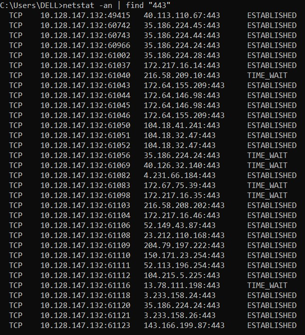
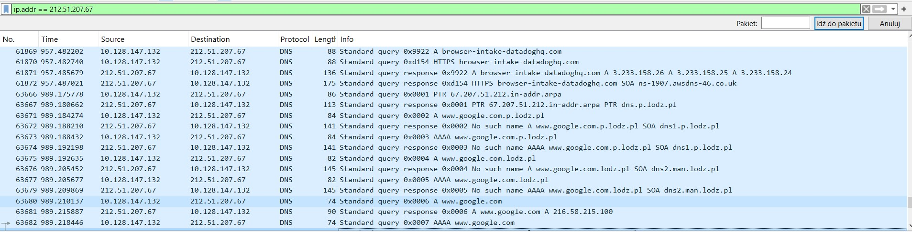
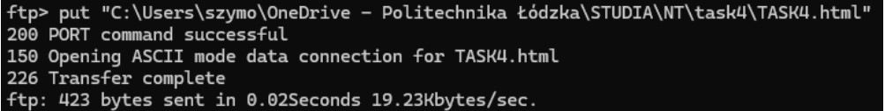
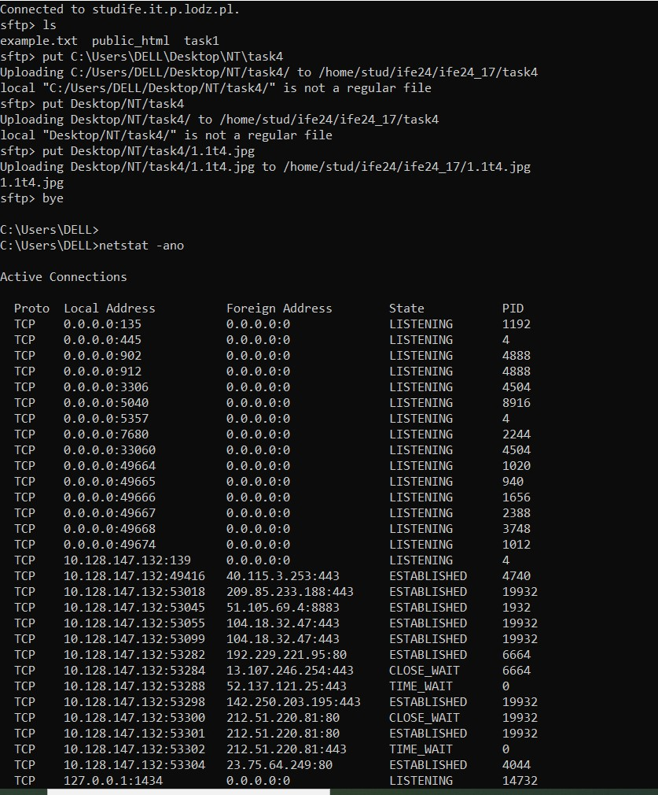
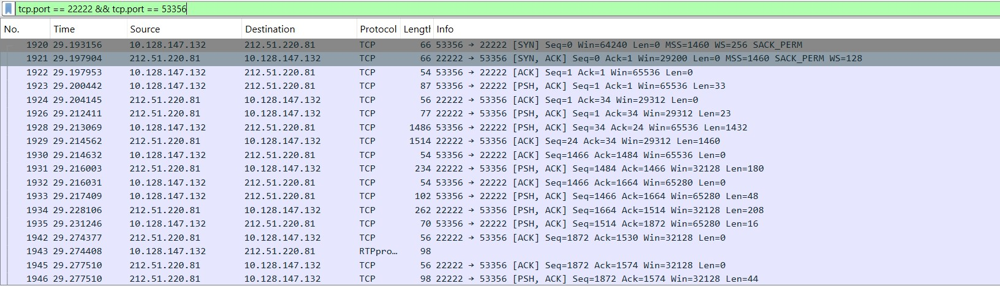
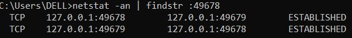

Theoretical Part
TCP Protocol
The Transmission Control Protocol (TCP) is a connection-oriented protocol that ensures reliable communication. It provides error checking, flow control, and data retransmission in case of errors.
UDP Protocol
The User Datagram Protocol (UDP) is a connectionless protocol that provides faster communication by not guaranteeing delivery. It is used for time-sensitive applications like video streaming and gaming.
TCP Protocol Parameters
- Sequence Number
- Acknowledgment Number
- Window Size
- Checksum
- Flags (SYN, ACK, FIN, etc.)
UDP Protocol Parameters
- Source Port
- Destination Port
- Length
- Checksum
TCP Connection
A TCP connection is established via a three-way handshake and terminated through a connection release process. It ensures reliable data transfer between sender and receiver.
Three-Way Handshake
Steps:
- Client sends a SYN (synchronize) packet to the server.
- Server responds with a SYN-ACK (synchronize-acknowledge) packet.
- Client sends an ACK (acknowledge) packet to confirm.
Connection Establishment
The three-way handshake establishes the connection between client and server by synchronizing their sequence numbers and acknowledgments.
Connection Release
Steps:
- One side sends a FIN packet to indicate no more data to send.
- The other side acknowledges the FIN and also sends a FIN.
- The first side acknowledges the FIN, completing the release.
Ports
Ports are used to identify specific applications or processes on a device. Common ports:
- 80: HTTP
- 443: HTTPS
- 25: SMTP
- 53: DNS
Practical Part
2. Practical part
2.1

2.2
2.3


2.4